Instalación
El software Buhos puede ser usado de forma local o en línea. En la primera, la aplicación despliega un servidor web al cual tiene acceso sólo el computador en el que fue instalado. En forma distribuida, la aplicación se integra a un servidor web como Apache o Nginx, utilizando Passenger.
Se cuenta con configuraciones Vagrant para usar Buhos en modalidad de servidor virtual.
Windows
En Windows, se cuenta con un instalador para el uso local de la aplicación. La última versión se encuentra disponible en:
https://github.com/clbustos/buhos-windows-tk/tree/master/windows_installer
Debian / Ubuntu /CentOS
Para Debian, Ubuntu y CentOS, se cuenta con paquetes disponibles e instrucciones en https://packager.io/gh/clbustos/buhos. Por ejemplo, para instalar en Ubuntu 16.04 y configurar la aplicación como un servicio en el puerto 4567, se debe realizar
wget -qO- https://dl.packager.io/srv/clbustos/buhos/key | sudo apt-key add -
sudo wget -O /etc/apt/sources.list.d/buhos.list \
https://dl.packager.io/srv/clbustos/buhos/master/installer/ubuntu/16.04.repo
sudo apt-get update
sudo apt-get install buhos
sudo buhos config:set PORT=4567
sudo buhos scale web=1
sudo buhos restart
Vagrant
En los directorios vendor/vagrant_alpine y vendor/vagrant_ubuntu_16 pueden encontrarse
configuraciones de vagrant para Alpine y Ubuntu 16.04, respectivamente. Se pueden ejecutar usando:
vagrant up
De forma predeterminada, la aplicación corre en el puerto 4567.
Desde código fuente
Como requisito previo para instalar el software, se necesita instalar Ruby 2.4 o superior, con librerías de desarrollo para MySQL y SQlite. Además, se debe instalar la gema bundler para descargar las gemas necesarias para que el software funcione.
En Ubuntu 16, las siguientes instrucciones instalan todas las dependencias requeridas:
apt-get update
apt-get upgrade -y
apt-get install -y \
cloc \
gdal-bin \
gdebi-core \
git \
libcurl4-openssl-dev \
libgdal-dev \
libproj-dev \
libxml2-dev \
libxml2-dev \
build-essential \
libmysqlclient-dev \
libsqlite3-dev
gpg --keyserver hkp://keys.gnupg.net \
--recv-keys 409B6B1796C275462A1703113804BB82D39DC0E3
curl -sSL https://get.rvm.io | bash -s $1
En Alpine, las instrucciones requeridas para instalar las dependencias son:
apk update
apk upgrade
apk --update add --virtual \
build-dependencies \
ruby-dev \
build-base \
ruby \
libffi-dev \
libxml2-dev \
libxslt-dev \
mariadb-dev \
sqlite-dev \
ruby-json \
ruby-bigdecimal \
ruby-etc
Una vez obtenidas las dependencias, se debe copiar el código fuente desde github, utilizando:
git clone git@github.com:clbustos/buhos.git
cd buhos
Se obtienen las gemas necesarias usando bundler
bundler install
Si se quiere utilizar MySQL, se debe crear la base de datos de forma previa. Como usuario root, se puede utilizar un script similar al siguiente:
CREATE DATABASES buhos;
CREATE USER buhos_user@localhost IDENTIFIED BY 'password';
GRANT ALL PRIVILEGES ON buhos.* TO buhos_user@localhost;
FLUSH PRIVILEGES;
Para correr la aplicación de forma local, se puede desplegar un servidor web (thin en *nix o puma en Windows), usando:
ruby app.rb
Se puede acceder al programa usando cualquier navegador en la URI: http://localhost:4567
Si se desea entregar [deploy] el software en línea, se puede proveer la aplicación vía Nginx o Apache, con Passenger. Las instrucciones necesarias para integrar una aplicación Passenger en un servidor de web linux se encuentran en:
https://www.phusionpassenger.com/library/walkthroughs/deploy/ruby/ownserver/integration_mode.html
Como referencia, la configuración de Buhos en Nginx para un servidor web típico es:
server {
listen 80
root /home/<user>/<base_dir>;
passenger_enabled on;
passenger_ruby <ruby_location>
}
En este caso, se podría acceder a la aplicación usando:
http://localhost/
Configuración post-instalación
La primera vez que se ejecuta la aplicación, esta debe ser configurada. Los pasos son 4:
- Selección del lenguaje.
- Configuración de las características básicas (base de datos a utilizar, conexión a proxy institucional y uso Scopus).
- Verificar conexión a base datos.
- Reiniciar la aplicación.
Como primer paso de la configuración hay que seleccionar el lenguaje para la instalación.
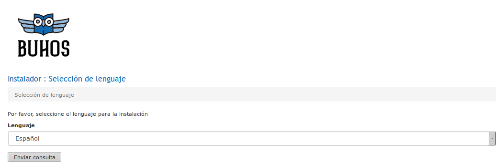
En segundo lugar, debe entregarse información básica para el funcionamiento del sistema. Esto implica seleccionar el uso de una base de datos sqlite, para uso local, o una base de datos MySQL, para un uso distribuido. Si no sabe que opción tomar, ocupe SQLite. Si cuenta con una clave de desarrollo Scopus, puede ingresarla; se utilizará la configuración del proxy si debe usar uno por su universidad o trabajo.
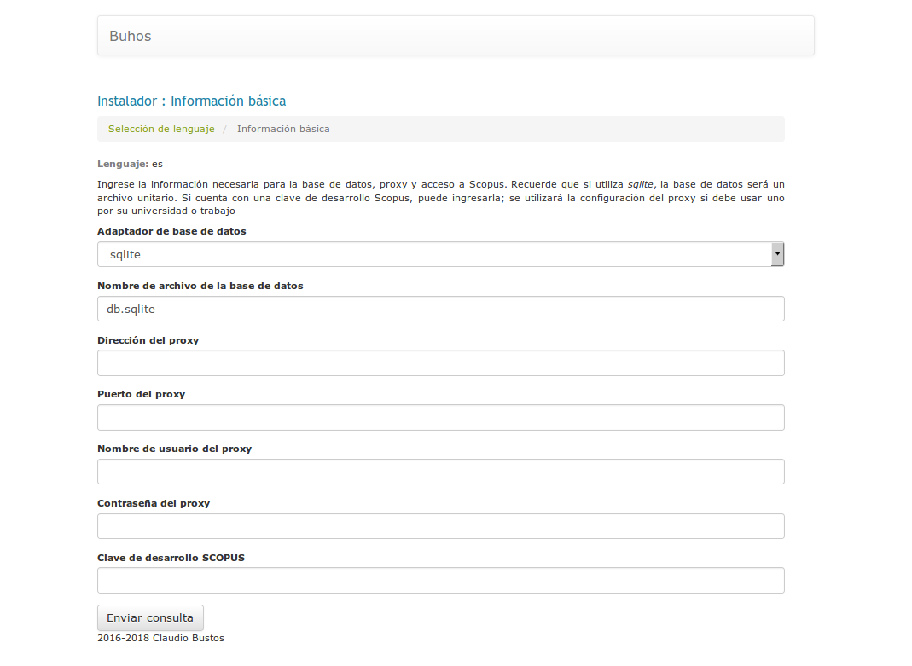
Una vez configurada la aplicación, esta intenta conectarse a la base de datos. Si el proceso es exitoso, se muestra un mensaje alusivo y se muestra un botón para iniciar el poblamiento de la base de datos, proceso que dura entre 30 a 60 segundos, dependiendo del computador.
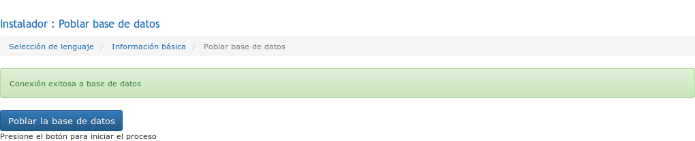
Si el resultado del proceso es exitoso, se muestra la siguiente pantalla:
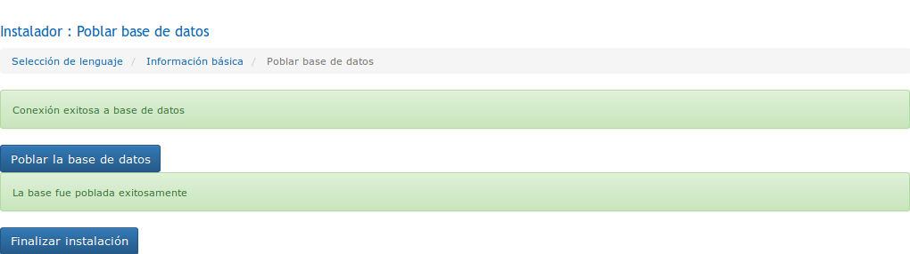
Al finalizar el proceso, se debe reiniciar la aplicación. De manera predeterminada, el usuario con permisos de administrador tiene como nombre de usuario y password ‘admin’.
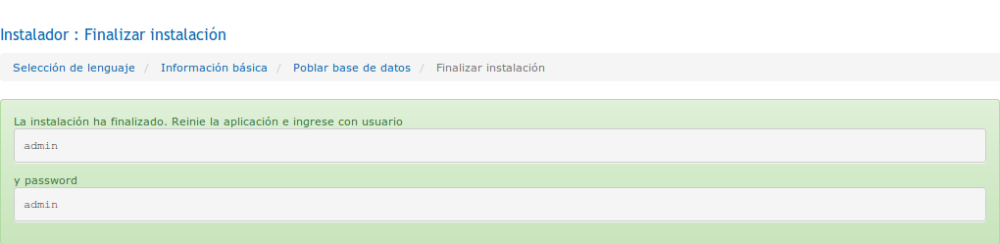
En linux, para cerrar la aplicación se puede usar Ctrl+C en consola. En Windows, se puede cerrar la ventana que muestra los logs de sistema.
Guía de uso
Para ingresar a la aplicación, se debe ingresar a la URL respectiva (http://localhost:4567 en el caso de la instalación local). En el caso de una instalación recién hecha, recordemos que el nombre de usuario y contraseña son ambos ‘admin’.
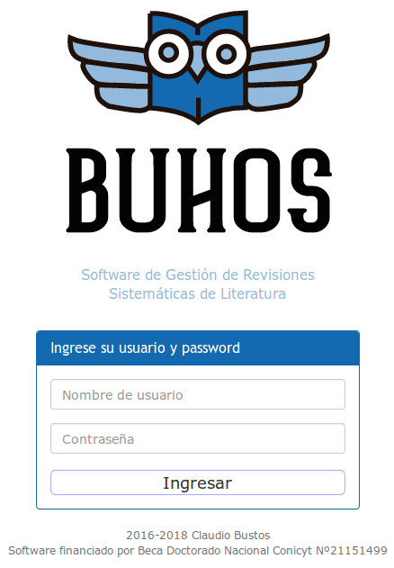
La interface principal de trabajo es el ‘tablero de trabajo’ , al cual se accede haciendo click en el nombre de la aplicación o en el enlace ‘Mi tablero’.
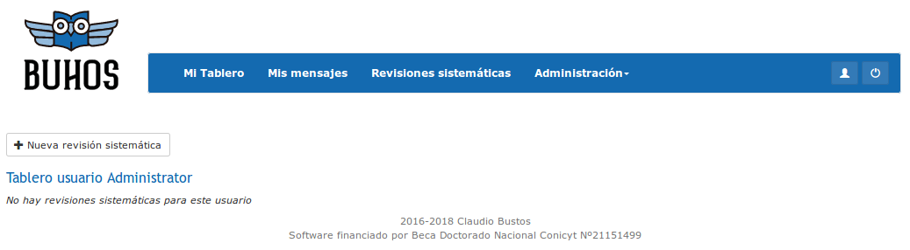
Para mostrar la funcionalidad del software, se utiliza un grupo de artículos usados en la revisión sistemática que documenta este software.
Preparación de la revisión sistemática
La revisión sistemática se crea presionando el botón “Nueva revisión sistemática”. Aparece un formulario donde se deben ingresar las características principales de la investigación, entre las cuales se encuentran los años entre los cuales se debe realizar la búsqueda y la taxonomía a la cual pertenece el estudio
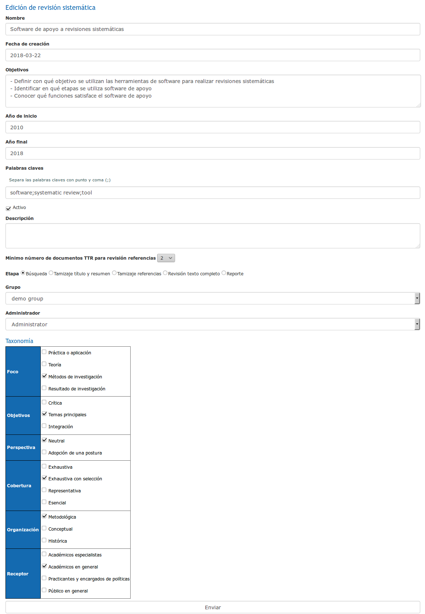
Una vez creada la revisión sistemática, se presenta una ficha técnica. Se observará que surge una amplia variedad de acciones para operar sobre la revisión sistemática.
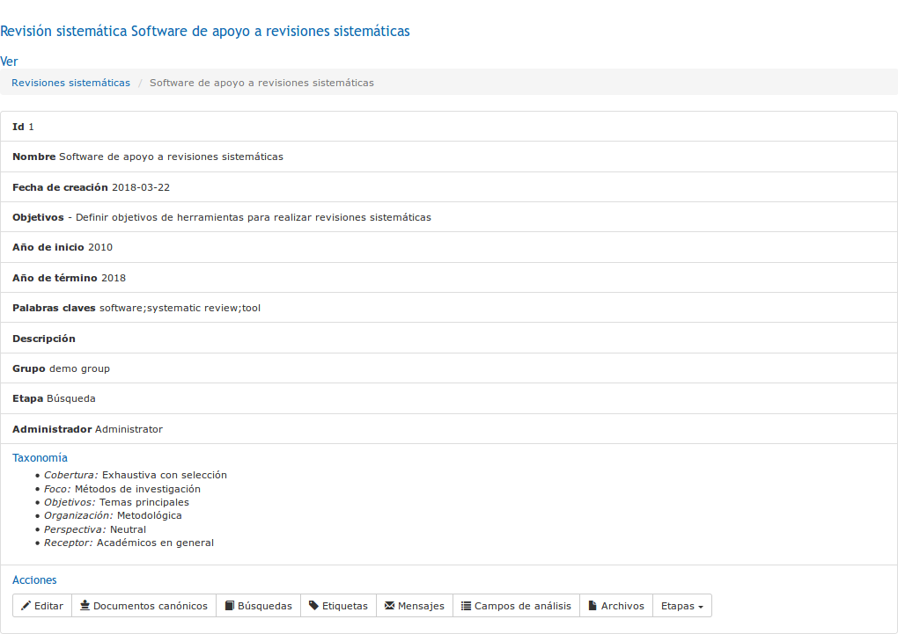
Como se muestra, se definieron tres objetivos, por lo que es posible generar un formulario personalizado para la revisión sistemática. Para ello, se debe presionar en el botón ‘Campos de análisis’.
Cada formulario está compuesto por uno o más campos. Primero se debe indicar qué lugar ocupará el campo dentro del formulario. Después, qué código tendrá el campo en la base de datos – este sólo podrá ser construido con letras minúsculas, números o el signo ‘_’. En tercer lugar, en la descripción se incluirá el texto que aparecerá en el formulario y, finalmente, qué tipo de campo será. Al terminar, presionar ‘Crear nuevo campo’.
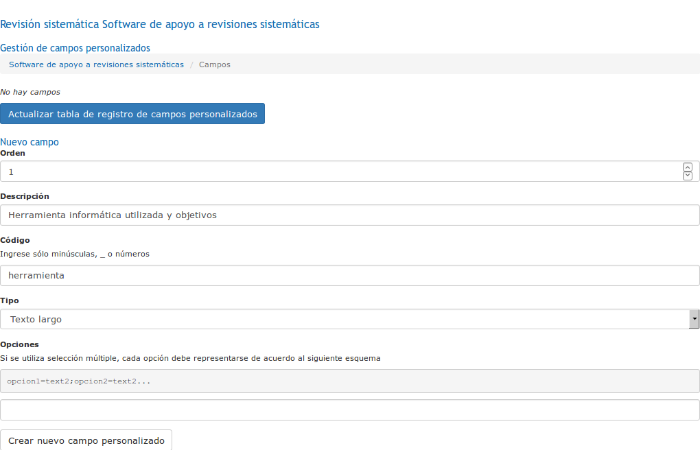
En el caso del ejemplo, necesitamos tres campos: herramientas, etapa y función. Una vez que el formulario esté completamente definido, presionar el botón ‘Actualizar tabla de registro de campos personalizados’, para generar el formulario.
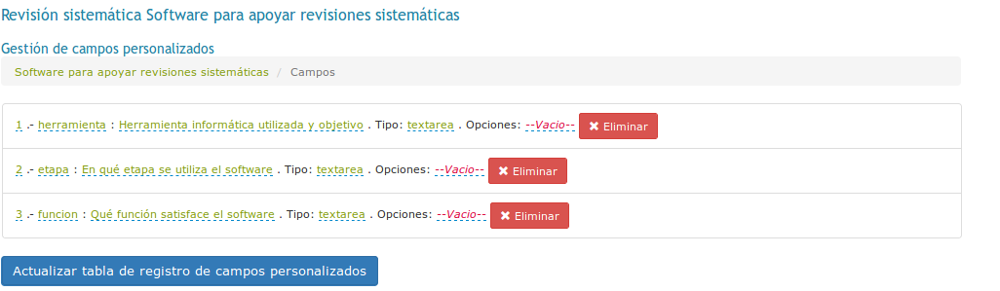
Etapa de búsqueda
De forma predeterminada, el sistema inicia la revisión sistemática en la etapa de búsqueda. En esta etapa, se deben registrar las búsquedas realizadas por los distintos evaluadores, hayan sido hechas en bases de datos bibliográficas o de forma informal, en buscadores de distinto tipo.
Para simplificar el proceso de registro de búsquedas, es posible acceder al tablero de usuario haciendo click en el nombre de la aplicación, donde aparece la siguiente interface.

El medio principal para la incorporación de información de búsquedas es el ingreso de archivos BibTeX, que está disponible en prácticamente todos los sistemas de referencia bibliográfica, algunos de ellos son: EndNote, Refwords y Mendeley, por ejemplo.
Para efectos de demostración, en el directorio de instalación del software se encuentra un archivo manual.bib, con seis textos seleccionados desde el repositorio Mendeley personal del desarrollador. Para ingresar esta búsqueda, se debe hacer click en el botón respectivo del tablero.
En el formulario, primero hay que indicar el tipo de fuente. Se ofrece la búsqueda en bases de datos indexada, búsqueda informal, bola de nieve hacia atrás (búsqueda en referencias en textos ya elegidos) y bola de nieve hacia adelante (búsqueda de artículos que citan a textos ya elegidos). En el ejemplo que se presenta, corresponde a una búsqueda informal. En segundo lugar, se solicita el ingreso de la base de datos de la cual se obtuvo la búsqueda. En el caso exhibido, al ser obtenido directamente desde Mendeley, aplica la opción ‘general’. En tercer lugar, se deja en blanco el criterio de búsqueda, ya no se usa la base de datos indexada, y se completa la descripción. Finalmente, y en el último espacio del formulario, ingresar el archivo manual.bib.
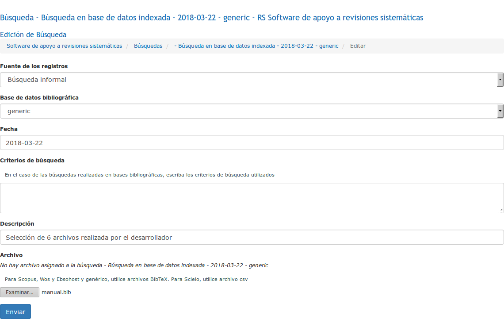
Incorporadas las búsquedas, éstas deben ser procesadas, para luego ser validadas. Para procesarlas, hacer click en el cuadro de chequeo respectivo y presionar en ‘Procesar búsquedas’
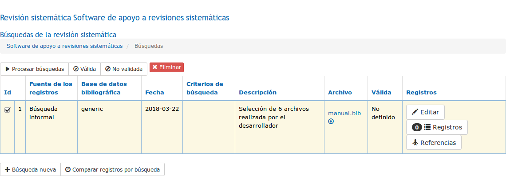
Al procesar la búsqueda, el sistema captura toda la información posible desde los registros almacenados en el archivo BibTeX. Se puede verificar que son seis los registros que el sistema detecta.
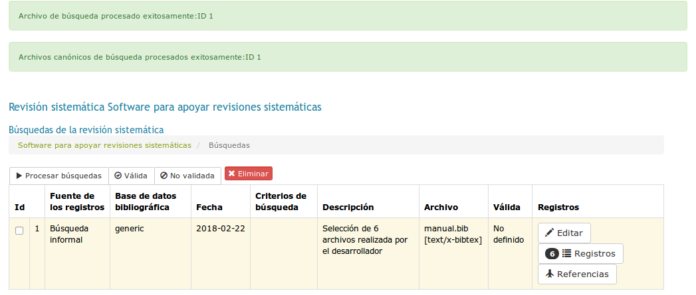
Al entrar en ‘Registros’, se observa que el sistema ha ingresado información sobre autores, año de publicación, título, así como el DOI de los documentos. En el caso del ejemplo, el BibTeX poseía el resumen de cada artículo, por lo que éste puede ser revisado presionando en el botón respectivo. A cada registro en una búsqueda se le asigna un ‘documento canónico’, correspondiente a la referencia única dentro del sistema a ese documento. De esta manera, si en distintas búsquedas aparece el mismo texto con la misma DOI, el sistema les asignará a todos estos registros el mismo documento canónico.
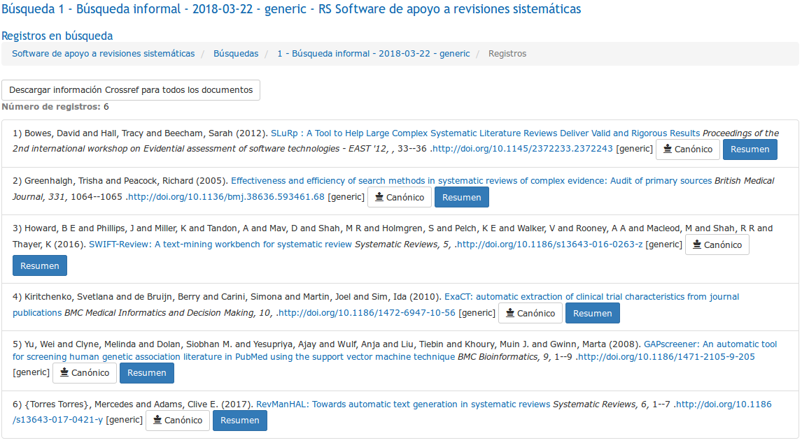
Como las referencias son las esperadas, es posible validar la búsqueda realizada. Para ello, se debe volver a la pantalla de búsquedas y hacer click en el cuadro de chequeo respectivo, y presionar en el botón ‘Válida’. El resultado debería ser el siguiente
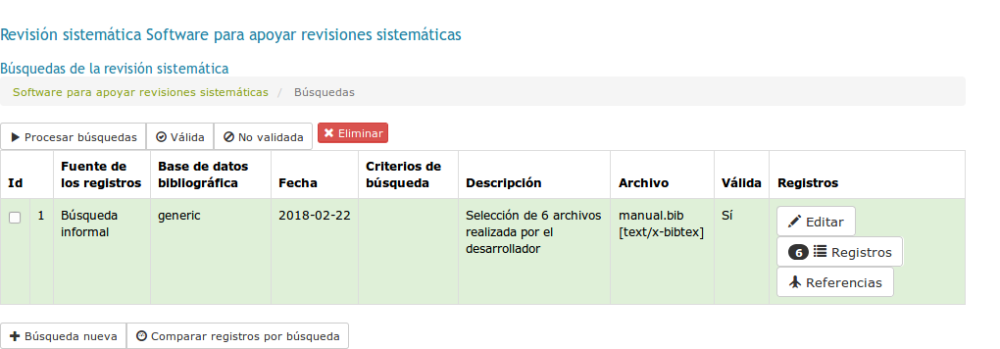
Una vez que todas las búsquedas son definidas como válidas o no válidas, es posible pasar a la siguiente etapa: tamizaje de títulos y abstract. Para ello, es necesario ingresar al tablero presionando en el título de la aplicación. Para administrar las validaciones, hacer click en la línea que dice ‘Número total de búsquedas de la revisión: 1’
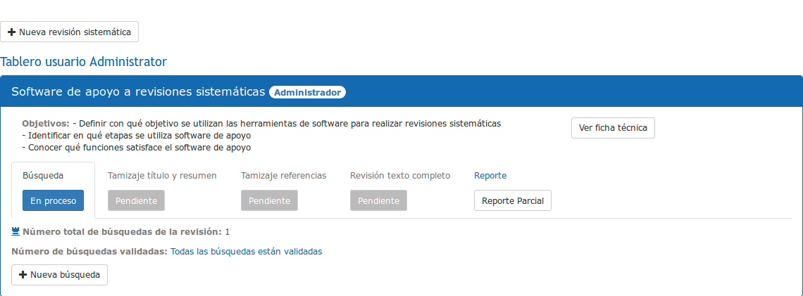
En la pantalla de administración de búsquedas, se muestran todas las búsquedas realizadas por los distintos usuarios, y se ofrece la posibilidad de validarlas o hacerlas no válidas. Como para todas las búsquedas ya existe una opción, se entrega la opción de avanzar a la siguiente etapa.
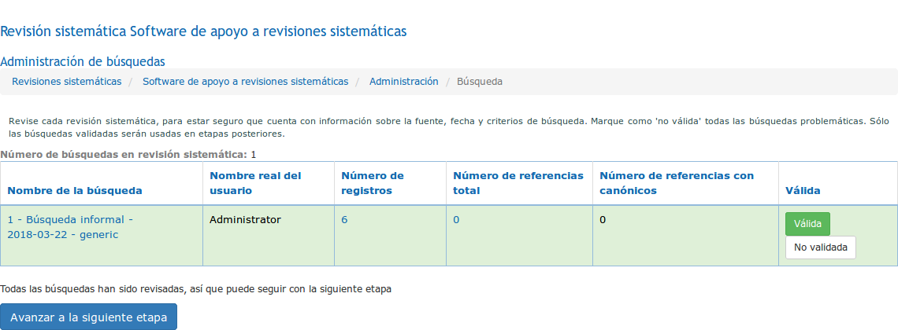
Etapa de tamizaje de título y resumen
Una vez definidos los registros, deben revisarse para verificar si son útiles o no. Para ello, el primer criterio es ver si el título y resumen del artículo entrega evidencia para ingresar el texto al estudio.
En la etapa siguiente, el sistema presenta la interface de administración
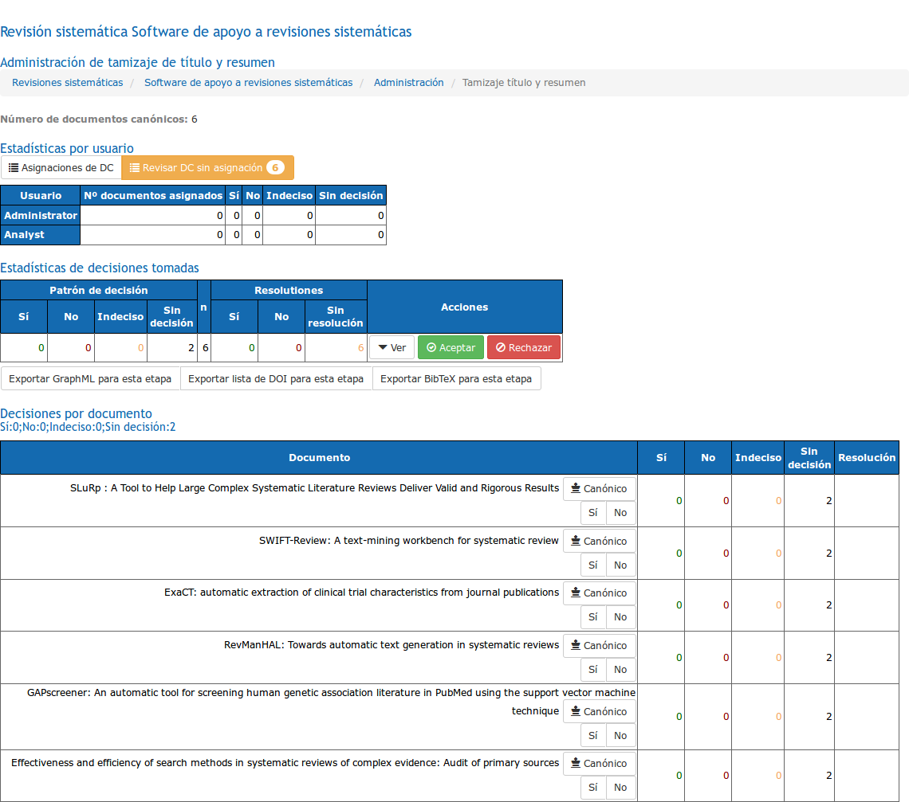
De forma predeterminada, Buhos considera tres usuarios: un administrador con todos los permisos para administrar el sistema, un analista con password y clave ‘analyst’, el que cuenta con la autorización para chequear las revisiones sistemáticas que les están asignadas y un usuario visitante, con password y clave 'guest', qué solo puede observar el sistema y enviar mensajes. En el ejemplo, la revisión sistemática está asignada al grupo donde se encuentran el administrador y el analista, por lo que se asignarán todos los documentos a ambos usuarios para mostrar la resolución de divergencias. Para ello, hay presionar el botón ‘Asignaciones de DC’.
Se pueden asignar todos los documentos a un usuario, usando los botones ‘Asignar todos’ o asignar individualmente cada documento. En el caso, se presionó los dos botones de ‘Asignar todos’.
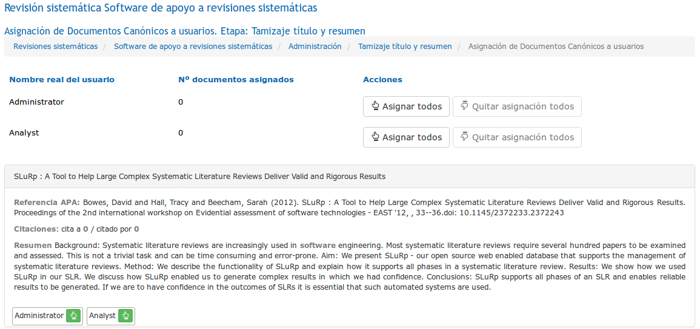
El resultado debería ser similar al siguiente:
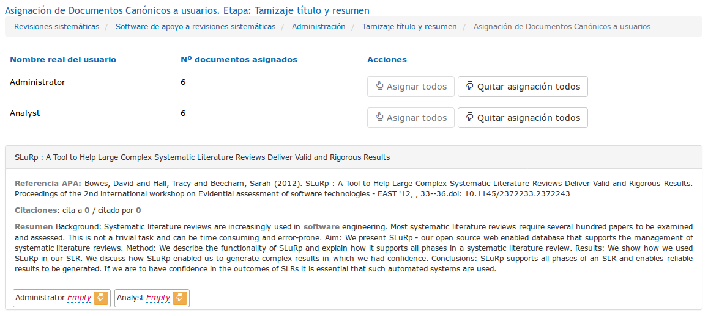
Al ingresar al tablero de usuario, se observa que, como administrador, tenemos seis documentos por resolver. Como evaluador, se muestra que hay que decidir sobre seis documentos. Presionemos el último enlace, para comenzar el proceso de evaluación.

La interface de evaluación, en su parte superior, entrega información general sobre la etapa, los objetivos de la revisión y muestra el estado de avance. En este caso, hay seis documentos sin decisión.

Posteriormente, se presenta cada documento a evaluar. En cada uno se muestra el título, su referencia en formato APA, cuántas citaciones tiene y el resumen . En base a esta información es que hay que decidir si el documento entrega información suficiente. Del abstract que se presenta como ejemplo, se observa que no entrega información sobre software de revisión sistemática, sino que es una investigación aborda cómo se realizan revisiones. Por tanto, se debe marcar ‘No’ en la decisión, y se puede agregar como etiqueta su condición de investigación sobre revisiones.

Al tomar la decisión antes indicada, se aprecia cómo cambia el color del cuadro y se agrega la etiqueta seleccionada.
El resumen del siguiente texto, sobre GAPScreener, presenta algunas de las palabras claves que se establecieron al definir la revisión sistemática. Queda claro tanto en el título como en el abstract que es una herramienta pertinente a la investigación. Incluso se puede agregar un tag que señale que es una herramienta para la etapa de screening.

Al revisar todos los documentos, se puede ver en el tablero de usuarios que ya no existen documentos sin revisar.

Ahora se realizará el mismo proceso de revisión, pero por parte del usuario analista. Para ello, hay que salir de la sesión presionando el enlace ‘Salir’ en la cabecera del sitio

E ingresar al sistema como analista. De forma predeterminada, el nombre de usuario es 'analyst' y su password 'analyst'
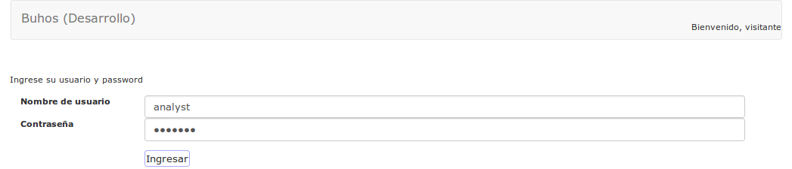
Se ve en el tablero de usuario del analista que no cuenta con las herramientas de administración, pero sí se indica que tiene documentos sin decisión.

El analista, en este ejemplo, marca que todos los documentos son relevantes para la investigación.
Una vez que todos los usuarios han decidido sobre los textos, es necesario que el administrador resuelva si cada documento debe o no seguir a la siguiente etapa. Ingresamos como administrador al sistema (usuario:admin, password:admin) y se va al enlace ‘Revisar 6 documentos canónicos sin resolución’.
Si se observa el cuadro ‘Estadísticas de decisiones’, se aprecia que hay cinco documentos con el patrón de decisión de dos ‘Sí’, y hay un documento donde un usuario decide que es relevante y otro que no.
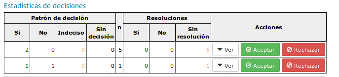
Como existe unanimidad, sobre cinco documentos, se presiona en el botón ‘Aceptar’ en la fila correspondiente. Ahí se puede ver que las resoluciones para estos textos pasaron de ‘Sin resolución’ a ‘Sí’
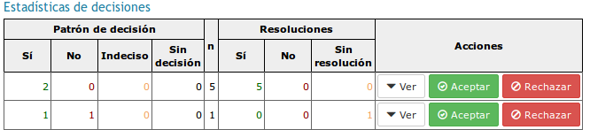
Para ver en qué textos se produce la discrepancia se presiona el botón ‘Ver’. El texto es precisamente aquel en que, como administradores, se señaló que no era válido.

Aquí, dependiendo del protocolo, hay varias alternativas: se puede enviar un mensaje a los investigadores desde la ficha técnica para comunicar la discordancia, se puede incorporar a un tercer investigador para que dirima o bien resolver en función del rol de administrador. Para el ejemplo, se tomó esta última opción presionando en el botón ‘Sí’, dejando la decisión para la etapa posterior de revisión de texto completo.
Al recargar la página, se señala que se ha resuelto el estado de todos los documentos canónicos, por lo que es posible pasar a la siguiente etapa. Previo a esto, se deben generar las referencias usando Crossref. Este proceso puede tomar varios minutos. Si se quiere verificar las referencias realizadas, éstas se pueden revisar en la interface de búsqueda.

Una vez que el sistema resuelva las referencias por Crossref, se puede avanzar a la siguiente etapa. En esta, se revisa si existe alguna referencia realizada por más de un cierto número de documentos seleccionados en la etapa de revisión de título y resumen. Este número aparece en la ficha técnica de la referencia como ‘Mínimo número de documentos RTR para revisión referencias’; de forma predeterminada, se fija en dos. En el caso del ejemplo, no existe ninguna referencia que cumpla esta condición, así que se pasa a la etapa de revisión de texto completo.

Revisión de texto completo
En la revisión de texto completo, además de las interfaces para asignar usuarios a documentos y resolver sobre ellos, se pueden asignar archivos a cada documento canónico. Cuatro de estos documentos son de acceso abierto [open access], así que se encuentran en el directorio de recursos del tutorial; pueden ser incorporados de manera masiva usando el botón ‘Manejo de archivos en lote’

Para ingresar los archivos, se debe presionar el botón que dice ‘Examinar’, y seleccionar los cuatro archivos PDF contenidos en la carpeta.

Los cuatro documentos han sido cargados, pero no se encuentran asignados a ningún documento canónico. Si se presiona el botón ‘Asignar automáticamente a documentos canónicos’, el sistema intentará hacer la asignación usando metadata desde los PDF.
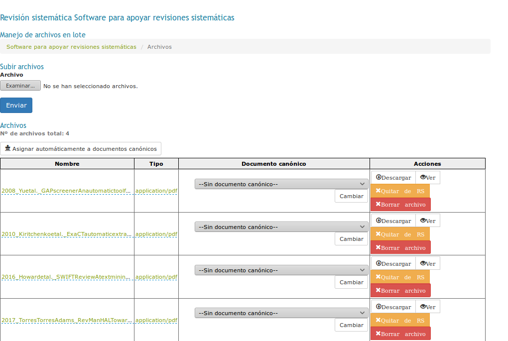
Se aprecia que la asignación automática fue bastante buena, logrando asignar correctamente tres de los cuatro documentos. Para asignar el documento faltante para el archivo de ExaCT sólo es necesario presionar en el cuadro de selección que dice ‘--Sin documento canónico--’, y elegir el documento canónico respectivo.
Dos de los artículos seleccionados no son de acceso libre. Para propósitos de este ejemplo, serán excluidos de la revisión al considerarlos textos sin acceso, aunque en una revisión real se debería contactar directamente a los autores para conseguir una copia. Para ello, al igual que lo hecho en la etapa de revisión de texto y título, se debe ir a la sección de decisiones por documento y hacemos click sobre el botón que dice ‘No’, para resolver no incluirlos.

Los cuatro textos restantes serán asignados de forma manual sólo al administrador. Para ello, se va al botón ‘Asignaciones de DC’ y, ocupando los botones de los textos específicos, se realiza la asignación respectiva.

En el tablero de usuario se puede observar que sólo hay cuatro documentos sin resolución y cuatro por analizar.

La interface de esta etapa muestra si hubo o no instrucciones específicas al momento de la asignación del documento para el usuario respectivo, así como si se ha realizado alguna decisión sobre el documento.
Para decidir si el documento es pertinente tras leerlo de forma completa, así como extraer información de él, se debe presionar en el botón que dice ‘Extraer información’.

La interface de decisión y extracción de información presenta un cuadro con el archivo PDF, el mismo cuadro de decisión de la etapa de revisión [screening] de título y resumen, además de las preguntas que definimos en los campos de análisis personalizado, al preparar la revisión sistemática.
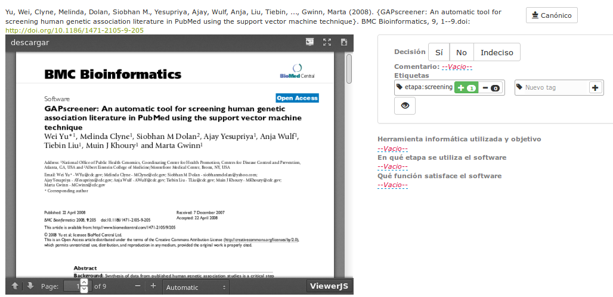
Al finalizar el proceso, desde el tablero nos dirigimos a la administración de la revisión y aceptamos todos los estudios, para avanzar a la etapa final.
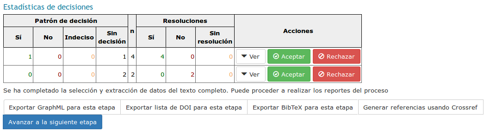
Reporte
El reporte de la revisión sistemática comprende 3 informes en línea y 2 tipos de exportación, a BibTeX y a Graphml. Este último formato, que guarda el grafo dirigido de citaciones realizadas por los documentos canónicos, se puede visualizar en programas como yEd o Gephi.

En primera lugar, contamos con diagrama de flujo PRISMA, el cual puede ser editado en un programa de dibujo vectorial como Inkscape.

El reporte de extracción de datos nos entrega la lista de códigos en vivo aparecidos en cada formulario, con el número de veces que aparece y el texto donde se encuentra localizado.

También se entrega un detalle completo de los ingresos realizados en los formularios
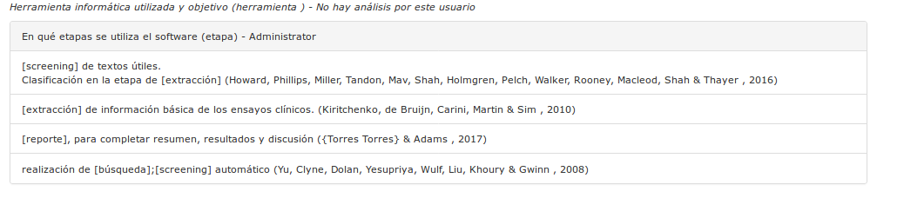
En el reporte de proceso se presentan todas las decisiones y resoluciones tomadas por el administrador y los evaluadores.